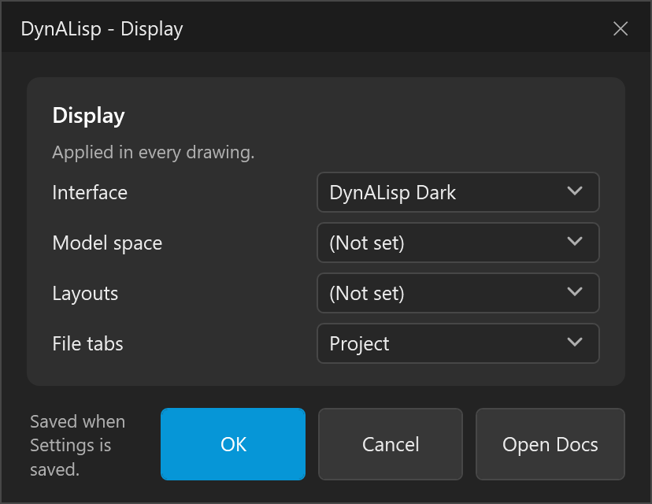

Settings
| Function Syntax | DYL-SETTINGS |
| Requires | AutoCAD 2025 or later for Windows |
| Licence | GNU General Public License v3 |
Program Description
Choose what DynALisp does for you, in every drawing. Everything is off until you turn it on.

How To Use
- Type Dyl-Settings, or click Settings on the DynALisp panel of the ribbon.
- Turn on what you want. A square button beside a setting opens its options.
- Click Save. Your open drawings follow when you switch to them.
Environment
| Setting | What it does |
|---|---|
| Language | The language the docs open in. The ribbon follows the language of AutoCAD. |
Reactors
Act on new objects as you draw.
| Setting | What it does |
|---|---|
| DynALisp reactors | Turns all the settings of this section on or off at once. |
| Auto-phase new objects | Puts new objects on the layer of the active phase (Layer Phase). |
| Auto layer keys | Puts new dimensions, leaders, text and tables on their proper layer (Object Layer Keys). |
| Auto draw order | Stacks new objects by the level of their layer (Draw Order). |
| Settings sync | Your other open drawings follow the settings you save here. |
Overrides
Set in every drawing you open.
| Setting | What it does |
|---|---|
| Drawing Settings | Sets the units and grid you chose for imperial and metric drawings (below). |
| Commands | Cleans up the drawing before you save or plot (Command Optimizer). |
| File Preferences | Sets the folders, units and language of your drawings (Set File Preferences). |
| System variables | Keeps your preferred AutoCAD variables (System Variables). |
| Display | Colors of AutoCAD and of the file tabs (below). |
| Revisions | Updates the title blocks of a project with its revisions when a sheet opens (Revisions). |
| Clean startup | Clears the startup messages from the command line (Clean Startup). |
| Reopen sheet sets | Opens your sheet sets again each time AutoCAD starts (Reopen Sheet Sets). |
| Start page | Shows the DynALisp Start page in the Start tab (Start Page). |
| Active time | Counts the time spent in each drawing, shown on the Start page. Stays on your computer. |
Layer Keys
When a layer already in the drawing differs from its layer key.
| Setting | What it does |
|---|---|
| Update them without asking | The layer takes the color, linetype and lineweight of its key (Layer Keys). |
| Keep them without asking | The layer stays as it is. |
Both off: DynALisp asks you. Turn one off here to be asked again.
Assistant
| Setting | What it does |
|---|---|
| Allow Lisp | Lets the Assistant do more in your drawing. You approve each action first, and U undoes it. |
Updates
| Setting | What it does |
|---|---|
| Install updates automatically | Installs new versions of DynALisp when you close AutoCAD (Updates). |
Drawing Settings Window

- Units / Grid – the units (Set Units) and grid (Standard Grid) of imperial and metric drawings.
- Shrinkwrap gap step – how much Shrinkwrap widens its search when it finds no outline.
Display Window

- Interface – DynALisp colors for the whole interface of AutoCAD, to match your mood. DynALisp Dark, the default, is a neutral dark grey. Or pick Midnight (deep blue-grey), Blueprint (blue), Forest (green), Ember (warm brown) or Plum (violet). Works with the dark theme of AutoCAD.
- Model space – another background for the model space: Black, Default or White.
- Layouts – another paper color for the layouts: White or Black.
- File tabs – a color on the file tab of each drawing, the same for every drawing of a Project or a Sheet set.
Interface and File tabs are experimental: a few parts of AutoCAD may keep their own colors.